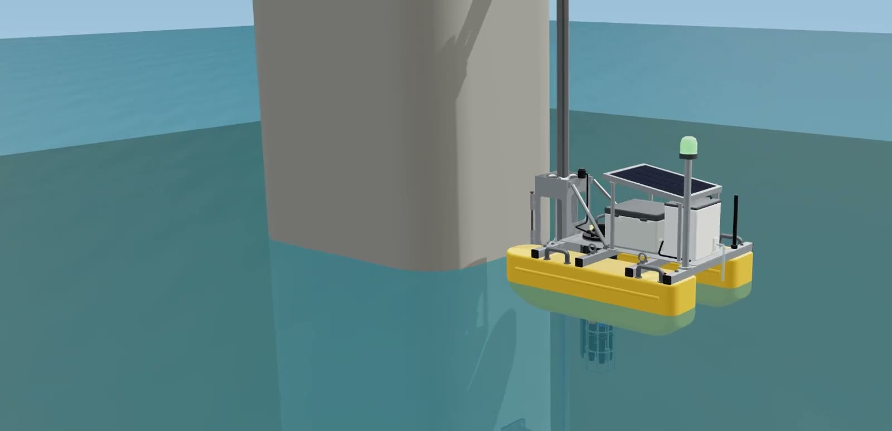
A solar-powered float on a guide pole, clamped to a bridge pier. Every 15 minutes it reads the river; when a spill passes it turns its beacon red, sends an alert and seals a time-stamped water sample. The river moves it, not a motor.
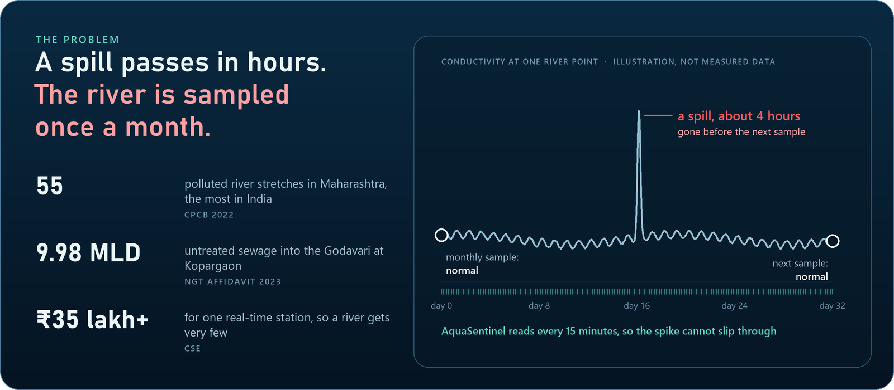
need a warning in time to close the intake.
needs a timed, sealed sample to act on.
need a signal anyone can read: no phone, no app.
Every 15 minutes, on the float itself.
On the ESP32, no cloud needed.
Warn, alert, keep the proof.
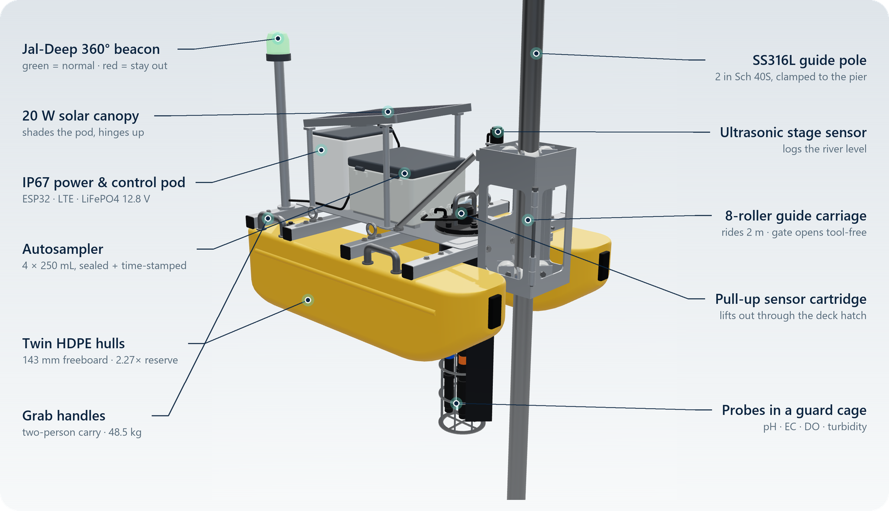
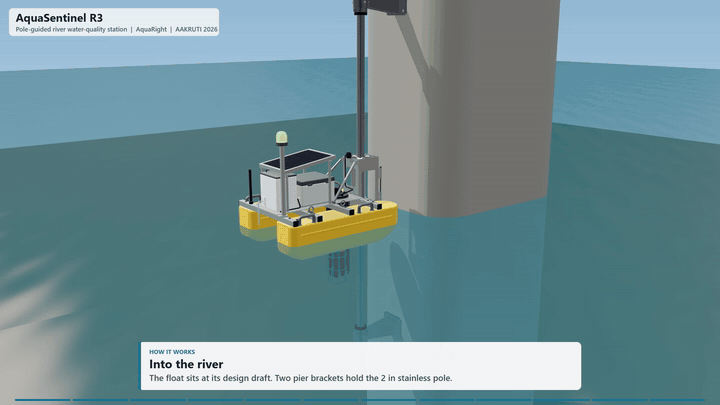
Raise the river, open the gate, lift the sensor cartridge, trigger a pollution event, explode the assembly, or click any of the 66 parts.
Prefer full screen? Open the viewer on its own page ↗
The problem, the solution and its impact.
The team, the brainstorming and how the idea grew.
Every part in place, then a day on the river.
Full-quality 1080p files are on the latest release.
| Check | Value | Source |
|---|---|---|
| Size · mass | 1.0 × 0.8 × 0.9 m · 48.5 kg | CAD mass properties |
| Freeboard · reserve buoyancy | 143 mm · 2.27× | Hand calcs on the CAD geometry |
| Stability | GM 0.55 m, rights itself to 60° | Hand calcs on the CAD geometry |
| Guide pole, flood + debris | 38.3 MPa, safety factor 4.4, 1.3 mm sway | SOLIDWORKS Simulation |
| Pier bracket | 3.7 MPa, safety factor 46 | SOLIDWORKS Simulation |
| Carriage jamming | 8.6× margin (1.7× with seized rollers) | Hand calcs |
| Clashes over 2 m travel | 0 | Voxel interference on the real meshes |
| Spill detection | 4 / 4 flagged, each within 30 min | Decision logic on 30 days of synthetic data |
| Prototype cost | ≈ ₹1.34 lakh vs ₹35 lakh+ per station | Catalogue prices |
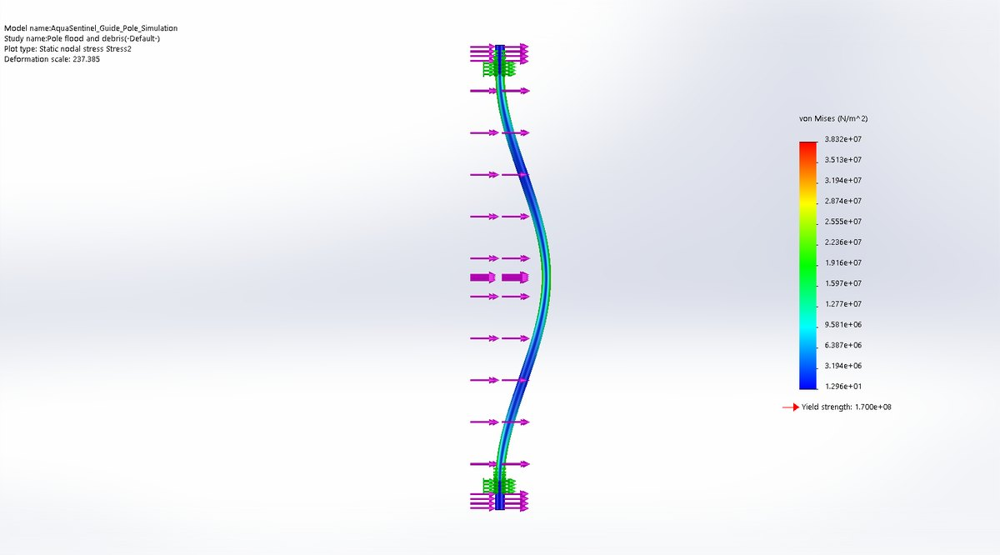
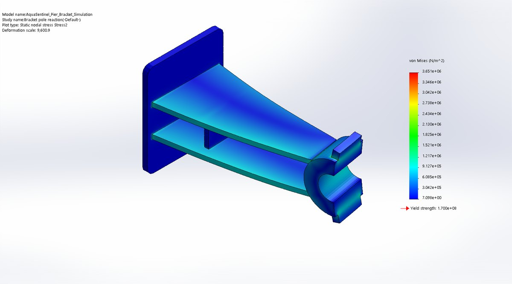
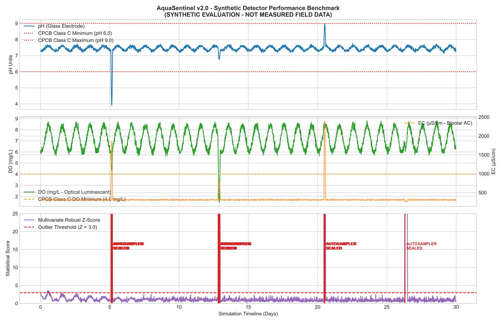
Hard limits act immediately: anything outside CPCB Class C is an alert. For the first 7 days the float learns what normal looks like at its site, hour by hour, then acts when 2 of the last 3 readings are unusual, so a single splash cannot trigger a sample.
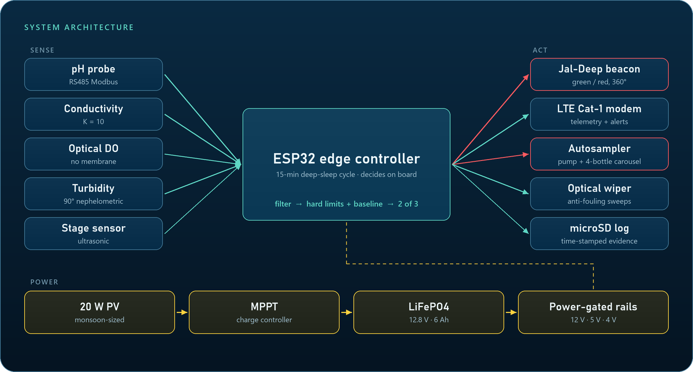
In v2 the guide pole ran straight through the electronics box. Moving it to the bow fixed the clash and turned it into a feature: the float now weathervanes with the current and the pole carries no torque.
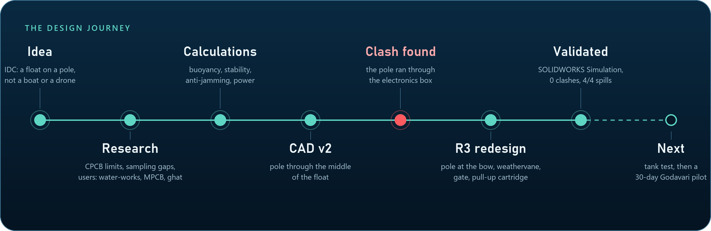
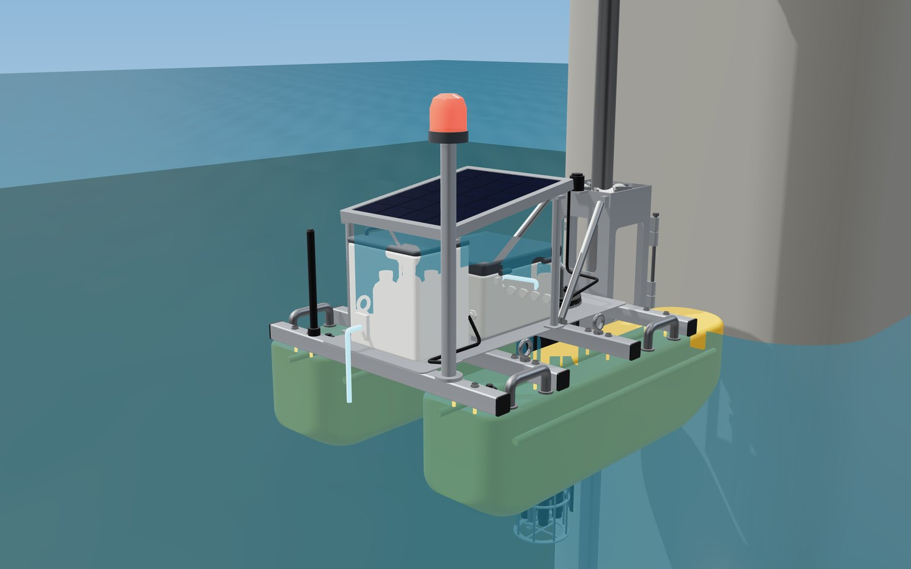
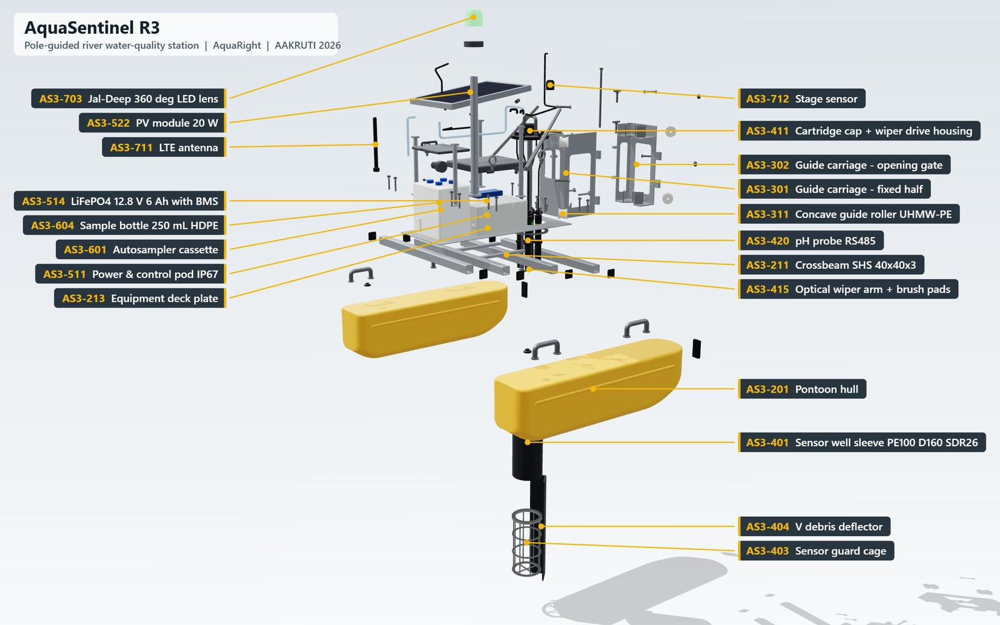
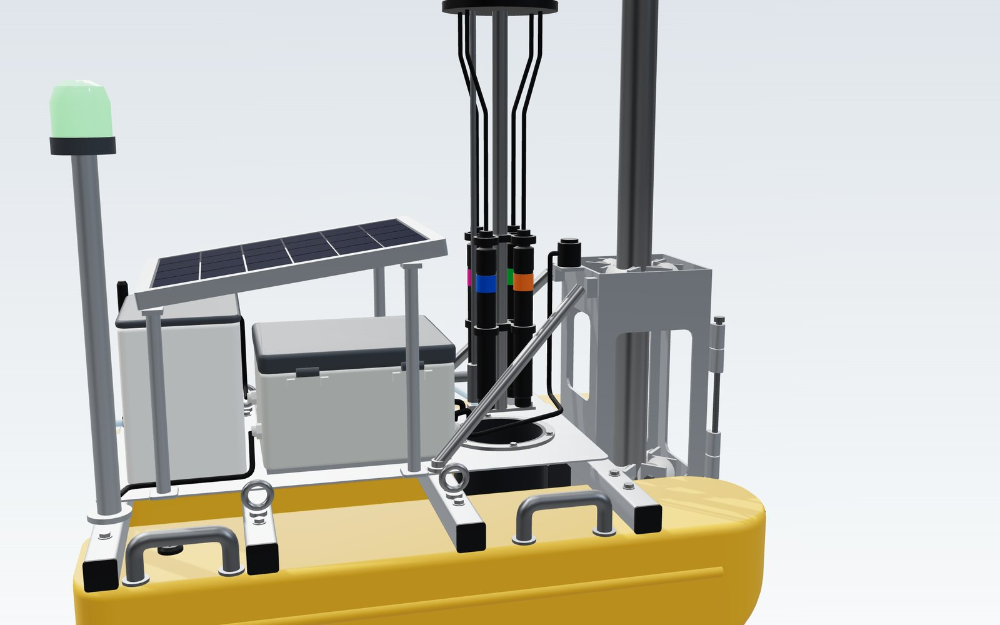
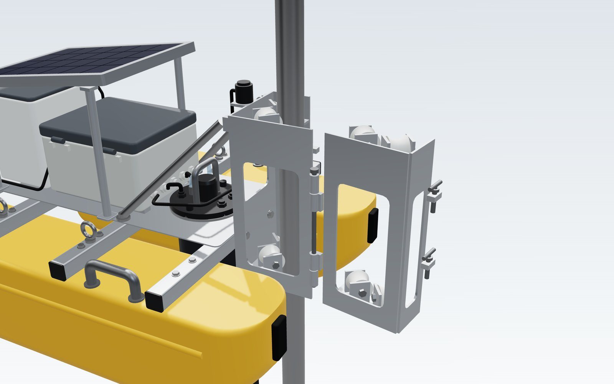
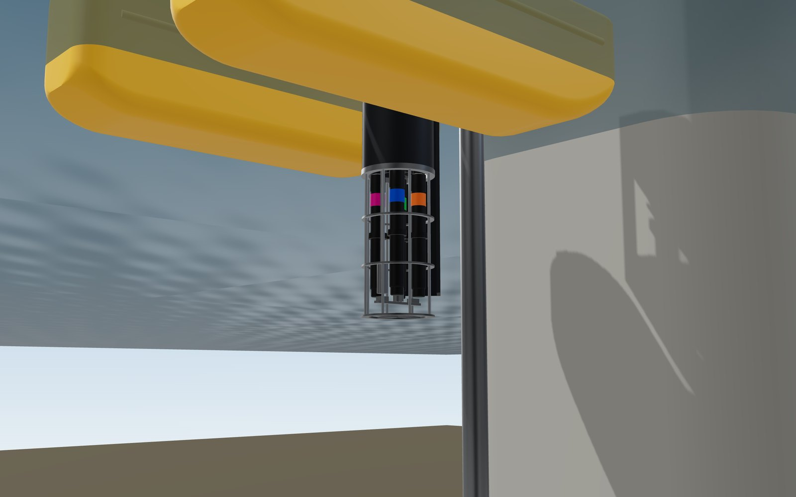
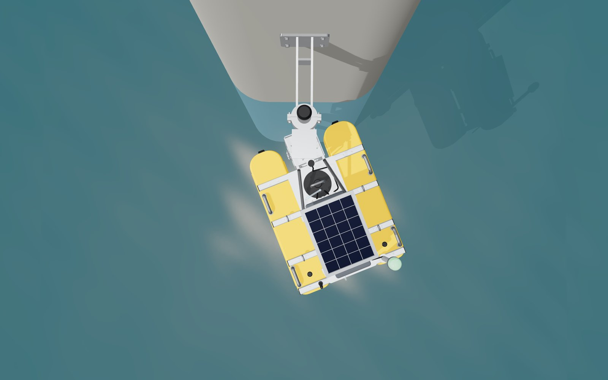
Assembly + all 66 part files
PresentationFinal Design Concept deck13 slides, official AAKRUTI template
DemoCommand dashboardEnglish · मराठी · हिंदी, synthetic scenario
ValidationSOLIDWORKS SimulationPole and bracket studies with reports
FirmwareESP32 edge controllerSense, decide, act, log, alert
Drawings6 × A3 drawing setGA, installation, carriage, well, hull, bracket
Sanjivani University, Kopargaon, Maharashtra. Built for the AAKRUTI Innovation Competition 2026 with Dassault Systèmes, designed in SOLIDWORKS, validated in SOLIDWORKS Simulation and planned in ENOVIA on the 3DEXPERIENCE platform.